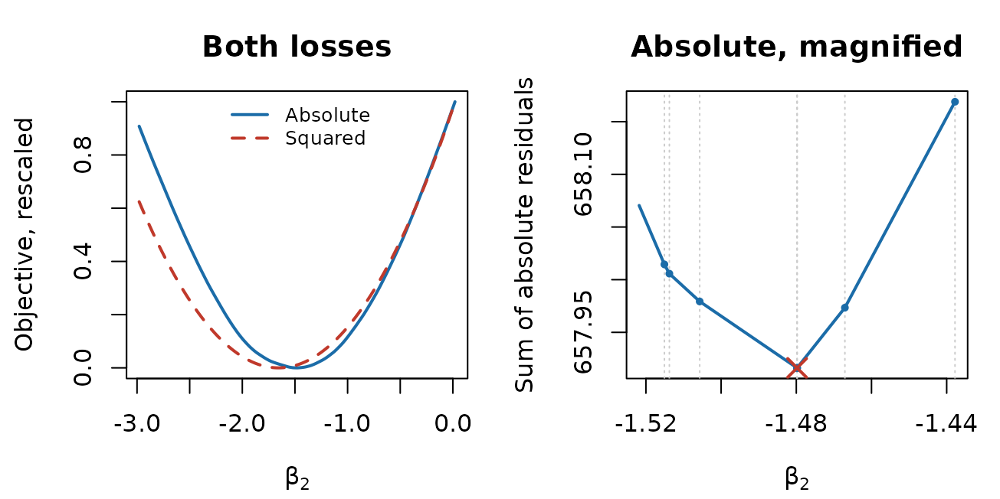

Gradient-Free Optimization with Least Absolute Deviations
James Joseph Balamuta
Source:vignettes/gradient-free-optimization.Rmd
gradient-free-optimization.RmdAbstract
In this vignette we fit a least absolute deviations regression
with a particle swarm optimizer. The loss has no derivative
wherever a residual is zero, and that is where its minimum sits.
The differentiable objective the other vignettes write cannot be
written here. We build a C++ class that supplies
Evaluate() and nothing else, then read the compiler
error an optimizer raises when it asks for more. We check the fit
against optim(method = "Nelder-Mead") and compare
five gradient-free optimizers on the same problem.
Overview
The linear regression vignette
and the logistic regression
vignette both hand ensmallen a
class carrying Evaluate() and Gradient().
Their objectives are differentiable everywhere, so the gradient comes in
closed form and the optimizer can be chosen for speed.
Least absolute deviations regression removes that choice. Its objective is a sum of absolute values, and an absolute value has no derivative at zero. A least absolute deviations fit puts residuals exactly on zero, so the objective has no gradient at the very point the optimizer is looking for. That settles which member functions the C++ class can supply, and which optimizers will accept it.
The C++ below is a fragment of one file, which is included in the
package as src/example-lad-gradient-free.cpp and compiled
into it as lad_reg_pso(). Because compiling C++ is slow,
this vignette displays the source without rebuilding it and calls the
precompiled function to produce the numbers.
The objective
The design matrix is with entries , the coefficient vector is , and the response is continuous. Indices run over observations and over coefficients. An intercept is a column of ones inside rather than a separate term.
The residual vector collects the discrepancies between the response and the fit:
Least squares sums the squares of those residuals. Least absolute deviations sums their absolute values, collapsing the of them to one number the same way:
Doubling a residual doubles its contribution to and quadruples its contribution to the residual sum of squares. A response far from the fitted line therefore pulls a least squares fit toward itself with a force that grows as it moves away, and pulls a least absolute deviations fit with a force that does not. That is why is the fit for data whose errors have heavy tails.
The missing gradient
The absolute value has derivative for and no derivative at , where the left and right slopes are and . At a that leaves every residual away from zero the chain rule applies term by term, and gives
A least absolute deviations fit for a design with columns passes exactly through of the observations, so residuals are zero and the expression above is undefined at the answer it is meant to find. The verification below counts those residuals, and the second panel of the figure shows the kink they produce.
Away from the solution the formula is no better behaved. reports plus or minus one however small a residual gets, so the vector it returns never shrinks as the fit improves, and a gradient method reads a vanishing gradient as convergence. The class therefore supplies the objective and stops.
The arbitrary function contract
ensmallen sorts objectives by which member functions
they define, and each optimizer states which of those sets it can work
with. A class carrying Evaluate() alone is an arbitrary
function.
| Contract | Member functions |
|---|---|
| Arbitrary | Evaluate() |
| Differentiable |
Evaluate(), Gradient()
|
| Differentiable separable |
Evaluate() and Gradient() over a batch,
NumFunctions(), Shuffle()
|
| Constrained |
Evaluate(), Gradient(),
NumConstraints(), EvaluateConstraint(),
GradientConstraint()
|
Reading down the table, the contracts get more demanding and the set of optimizers that accept them gets smaller. This vignette sits on the first row; the logistic regression vignette writes the second and third, and the constrained optimization vignette the fourth.
Every standalone file using RcppEnsmallen opens with the
same two lines, the attribute telling Rcpp::sourceCpp()
where to find the headers.
The class holds the data and computes one number from a coefficient vector.
// Define an arbitrary objective function by implementing Evaluate() and
// nothing else.
class LADFunction
{
public:
// Construct the object with the given design matrix and responses.
LADFunction(const arma::mat& X,
const arma::vec& y) :
X(X), y(y) { }
// Return the objective function for model parameters beta.
double Evaluate(const arma::mat& beta)
{
return arma::accu(arma::abs(y - X * beta));
}
private:
// The design matrix.
const arma::mat& X;
// The responses to each data point.
const arma::vec& y;
};y - X * beta is the
residual vector, and arma::abs() acts on it elementwise.
arma::accu() sums the result to the one number
Evaluate() returns. beta arrives as a
matrix, one entry per column of X, as it does in the
differentiable classes.
A contract mismatch
The pairing between a class and an optimizer is checked when the file
is compiled, not when it runs. Substituting ens::CMAES<>
for the optimizer used below and rebuilding gives three errors, of which
these two carry the information. Paths, line numbers and instantiation
traces are cut, and long lines wrapped:
error: no member named 'NumFunctions' in 'LADFunction'
const size_t numFunctions = function.NumFunctions();
error: static assertion failed due to requirement
'CheckSeparableEvaluate<LADFunction, arma::Mat<double>,
arma::Mat<double>>::value': The FunctionType does not have a correct
definition of Evaluate(). Please check that the FunctionType fully satisfies
the requirements of the ArbitrarySeparableFunctionType API; see the optimizer
tutorial for more details.The second message names the contract CMA-ES wants, the arbitrary
separable one, which asks for Evaluate() over a
batch of data points and a NumFunctions() reporting how
many there are. That is a different row of the table above, and the
first message names the missing member function outright.
The static checks live in
inst/include/ensmallen_bits/function/static_checks.hpp,
where each contract carries a message naming itself, so a build failure
identifies the API the optimizer expects without looking the optimizer
up first.
Running the optimizer
ens::LBestPSO
is a local best particle swarm optimizer. It scatters candidate
coefficient vectors across the search space and moves each one toward
the best point it has seen and the best point its neighbors have seen,
using nothing but the objective values it collects along the way.
// [[Rcpp::export]]
arma::vec lad_reg_pso(const arma::mat& X, const arma::vec& y) {
// Construct the objective function.
LADFunction ladf(X, y);
// Create the local best particle swarm optimizer with default parameters.
// The ens::LBestPSO type can be replaced with any ensmallen optimizer that
// can handle arbitrary functions, meaning ones that supply Evaluate()
// alone.
ens::LBestPSO pso;
// Create a starting point for our optimization. The swarm is placed at
// random, so only the shape of this matrix is read. The model has p
// parameters, so the shape is p x 1.
arma::mat beta(X.n_cols, 1, arma::fill::zeros);
// Run the optimization. The swarm draws through R's random number
// generator, so set.seed() on the R side pins the result.
pso.Optimize(ladf, beta);
return beta;
}The zeros are read for their dimensions and then overwritten, a departure from the L-BFGS examples where the starting values are the point the search begins at.
The included file adds a block of Rcpp::stop() argument
checks at the top of this function, omitted here so the optimizer setup
stays in view. They reject a non-finite X or
y, since a single NA makes the objective
non-finite for every particle, leaving the swarm nothing to move toward
and returning the untouched starting point as if it were a fit. The
response is continuous, so the check on y is finiteness
rather than the membership in
the logistic examples require.
Note: the // [[Rcpp::export]] attribute
has to appear in the .cpp file Rcpp compiles, but the class
does not have to. Moving the class into a header beside it and including
it with #include works under both sourceCpp()
and a package build.
Verifying the result
The simulation draws its errors from a distribution with two degrees of freedom, which has no finite variance, since heavy tails are the setting this loss is for.
n <- 400
beta <- c(2, -1.5, 0.8)
p <- length(beta)
set.seed(512)
# Design matrix with an intercept column
X <- cbind(1, matrix(rnorm(n * (p - 1)), ncol = p - 1))
# Continuous responses with heavy tailed errors
y <- as.vector(X %*% beta + rt(n, df = 2))optim(method = "Nelder-Mead") is the base R comparison.
Like the particle swarm it never asks for a derivative, so both solvers
work from the same information about the same surface.
obj <- function(b) sum(abs(y - X %*% b))
set.seed(512)
fit <- lad_reg_pso(X, y)
nm <- optim(rep(0, p), obj, method = "Nelder-Mead",
control = list(maxit = 20000, reltol = 1e-12))| Truth | LBestPSO | Nelder-Mead | |
|---|---|---|---|
| Beta1 | 2.0 | 2.086174 | 2.086044 |
| Beta2 | -1.5 | -1.479793 | -1.479825 |
| Beta3 | 0.8 | 0.805097 | 0.804808 |
The two solvers agree to three decimal places, and each sits further from the truth than from the other. The gap to the generating parameters is sampling error at with noise, not optimizer error.
Coefficients are the loose measure here. A piecewise linear surface is flat along the directions that move a coefficient without moving any residual across zero, so two solvers can stop at visibly different points of the same flat region. The objective is the tight measure, and the one being minimized:
c(LBestPSO = obj(fit), NelderMead = nm$value)
#> LBestPSO NelderMead
#> 657.9162 657.9169
obj(fit) - nm$value
#> [1] -0.0007237308The swarm reaches the lower value of the two. Nelder-Mead closes the remaining gap when it is restarted from its own answer until it stops improving, which is the reference the package tests measure against; a single call from a vector of zeros stops short.
The zero residuals asserted earlier are visible in the fit:
resid <- as.vector(y - X %*% fit)
sort(abs(resid))[1:5]
#> [1] 1.776357e-14 3.905765e-13 2.676215e-11 1.086180e-02 1.325001e-02The three smallest, one per column of X, fall below
1e-9, and the fourth is larger than the third by seven orders of
magnitude. The fitted plane passes through three of the four hundred
points exactly, and the objective has no derivative there.
The formula a Gradient() would have used has length of
order one at the fit rather than of order zero, and stepping a millionth
of a unit away does not shrink it.
grad <- function(b) -as.vector(t(X) %*% sign(as.vector(y - X %*% b)))
set.seed(9)
step <- rnorm(p)
step <- step / sqrt(sum(step^2))
c(at_the_fit = sqrt(sum(grad(fit)^2)),
a_step_away = sqrt(sum(grad(fit + 1e-6 * step)^2)))
#> at_the_fit a_step_away
#> 5.408887 2.583003An optimizer watching that number for a signal to stop would wait forever.
Holding the first and third coefficients at their fitted values and varying the second gives a one-dimensional slice of the objective. It is drawn twice below, once over a wide window beside the squared-error loss on the same data, and once magnified around the minimum.
hold <- X[, 1] * fit[1] + X[, 3] * fit[3]
l1 <- function(b2) sum(abs(y - hold - X[, 2] * b2))
sse <- function(b2) sum((y - hold - X[, 2] * b2)^2)
# Left: both losses over a wide window, each shifted to its own minimum and
# scaled to a common range so they share an axis.
wide <- seq(fit[2] - 1.5, fit[2] + 1.5, length.out = 400)
rescale <- function(v) (v - min(v)) / diff(range(v))
plot(wide, rescale(vapply(wide, l1, 0)), type = "l", lwd = 2, col = "#1b6ca8",
ylim = c(0, 1), xlab = expression(beta[2]),
ylab = "Objective, rescaled", main = "Both losses")
lines(wide, rescale(vapply(wide, sse, 0)), lwd = 2, col = "#c0392b", lty = 2)
legend("top", bty = "n", cex = 0.8, legend = c("Absolute", "Squared"),
col = c("#1b6ca8", "#c0392b"), lty = c(1, 2), lwd = 2)
# Right: the absolute loss near the minimum. A kink sits at every b2 that
# sends one residual through zero.
kinks <- (y - hold) / X[, 2]
halfw <- sort(abs(kinks - fit[2]))[8]
near <- kinks[abs(kinks - fit[2]) <= halfw]
zoom <- seq(fit[2] - halfw, fit[2] + halfw, length.out = 1500)
plot(zoom, vapply(zoom, l1, 0), type = "n", xlab = expression(beta[2]),
ylab = "Sum of absolute residuals", main = "Absolute, magnified")
abline(v = near, col = "grey80", lty = 3)
lines(zoom, vapply(zoom, l1, 0), lwd = 2, col = "#1b6ca8")
points(near, vapply(near, l1, 0), pch = 16, cex = 0.7, col = "#1b6ca8")
points(fit[2], l1(fit[2]), pch = 4, cex = 1.7, lwd = 2, col = "#c0392b")
At the scale of the left panel both curves look like smooth bowls that a gradient method could descend. The right panel covers a window a few percent as wide. There the absolute loss is a chain of straight segments whose slope changes at each dotted line. Each dotted line is a value of that sends one residual through zero. The minimum, marked with a cross, is a corner rather than a smooth turn, the slope arriving negative and leaving positive with nothing in between. Each break changes the slope by , which is why the breaks belonging to small entries of the second column are hard to see.
Choosing an optimizer
Five optimizers in ensmallen accept a class shaped like
LADFunction. Swapping the type on one line of
lad_reg_pso() is the whole change:
ens::LBestPSO pso; // ens::SA<>, ens::CNE, ens::SPSA and ens::DE also
// accept a class that supplies Evaluate() alone.Run at their default settings on the data generated above, each
seeded with set.seed(512) and started from a vector of
zeros, they separate clearly. The reference is Nelder-Mead restarted
from its own answer until it stops improving, which reaches 657.916218
on this data, and the gap column reports how far above that each
optimizer stopped.
| Optimizer | Objective | Gap to the reference |
|---|---|---|
ens::LBestPSO |
657.916218 | 1.9e-10 |
ens::SA<> |
657.916432 | 2.1e-04 |
ens::CNE |
657.949083 | 3.3e-02 |
ens::SPSA |
658.023219 | 1.1e-01 |
ens::DE |
662.798752 | 4.9e+00 |
The swarm matches the reference to 2e-10 on the objective and to
3.5e-10 on the worst coefficient, which is why
lad_reg_pso() uses it. Simulated annealing lands close
behind. Conventional neural evolution and simultaneous perturbation
stochastic approximation stop at points that are visibly worse but still
recognizable as the fit.
Differential evolution at its defaults misses badly, by roughly five units of objective and 0.23 in the worst coefficient. Its own header says as much. The constructor takes a population size, a maximum number of generations, a crossover rate and a differential weight. The comment above it warns that “the default values provided over here are not necessarily suitable for a given function” and recommends adjusting them to the problem.
Nothing in the vector it returns announces the failure. The coefficients have the right signs and roughly the right magnitudes, and a gradient-free optimizer leaves behind no gradient to test for flatness where it stopped. The table catches it by running a second solver on the same data and comparing objectives.
These numbers are one run on one data set. Hold the data, the seed and the starting point fixed, change one type, and compare the objective rather than the coefficients.
The specialist solver
Nelder-Mead is another general purpose search. The check below is
against the solver built for this problem. Least absolute deviations is
median regression, the
case of quantile regression, and quantreg::rq() is the
established R implementation. It does not search at all. It writes the
fit as a linear program and solves that exactly. The swarm walks toward
the corner of the objective; rq computes which corner it
is.
rq_beta <- as.vector(coef(quantreg::rq(y ~ X - 1, tau = 0.5)))
c(LBestPSO = obj(fit), rq = obj(rq_beta))
#> LBestPSO rq
#> 657.9162 657.9162
obj(fit) - obj(rq_beta)
#> [1] 7.617018e-12
max(abs(as.vector(fit) - rq_beta))
#> [1] 1.40149e-11Both reach an objective of 657.916218. The swarm sits 1.9e-10 above the exact solution, and the two coefficient vectors differ by at most 3.5e-10. On this data the swarm found the right point.
Agreement is half a benchmark. The other half is what each answer cost. The swarm is timed with its seed reset every repetition, so each measured call does the same work as the one in the fit above.
pso_reps <- 10
rq_reps <- 200
pso_time <- system.time(
for (i in seq_len(pso_reps)) {
set.seed(512)
lad_reg_pso(X, y)
}
)[["elapsed"]] / pso_reps
rq_time <- system.time(
for (i in seq_len(rq_reps)) quantreg::rq(y ~ X - 1, tau = 0.5)
)[["elapsed"]] / rq_reps
c(LBestPSO = pso_time, rq = rq_time)
#> LBestPSO rq
#> 0.090500 0.000855
pso_time / rq_time
#> [1] 105.848The ratio ran into the hundreds on every run measured here.
ens::LBestPSO defaults to 64 particles and up to 3000
iterations, and evaluates the objective once per particle per iteration.
A simplex method on a linear program of this size does far less
arithmetic.
A general purpose optimizer reached the answer a specialist solver
reaches, and paid two orders of magnitude in time to get there. When a
specialist solver exists for your objective, use the specialist.
ensmallen earns its place on the objectives that have no
specialist, or the ones you wrote yourself and nobody has solved before.
LADFunction is twenty lines and required no knowledge of
linear programming.
Seeding
The swarm is drawn through Armadillo’s random number generator, which
RcppArmadillo routes onto R’s own stream, so a fixed seed
makes a run reproducible exactly as it does for the mini-batch optimizer
in the logistic regression vignette:
set.seed(20260818); first <- lad_reg_pso(X, y)
set.seed(20260818); second <- lad_reg_pso(X, y)
identical(first, second)
#> [1] TRUEThe same mechanism means a call consumes random numbers from R’s
stream and shifts whatever draws follow it. Unseeded runs land at
slightly different points on the surface, and the spread widens as
X gains columns, so seed every call whose result is
compared against a fixed number.
The included file
src/example-lad-gradient-free.cpp holds the class, the
exported function, the argument checks omitted above, and the roxygen
block behind ?lad_reg_pso. The logistic
regression vignette covers moving a standalone file into a
package.
The constrained optimization
vignette takes the last row of the contract table, where the class
supplies Evaluate() and Gradient() and three
more member functions besides.